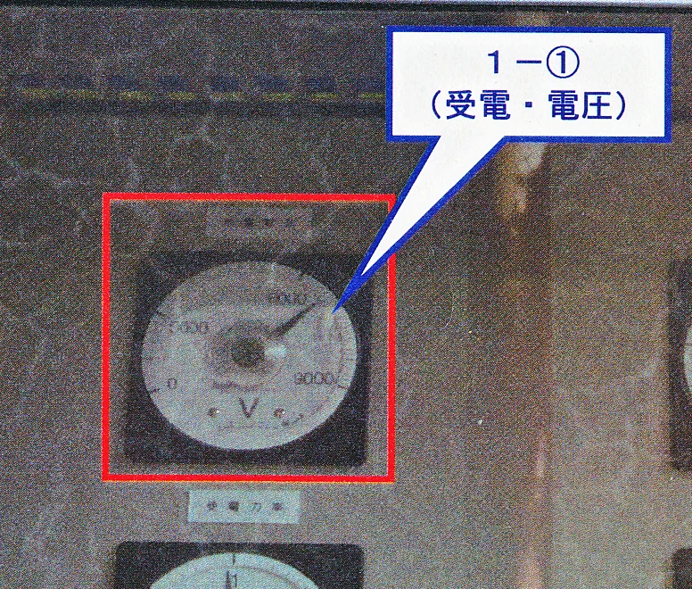
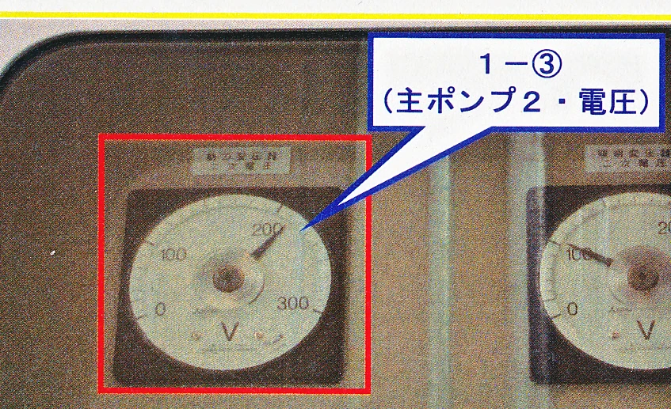

ポンプ場点検
【1/6】電気系統（1～6）
1. 受電電圧計

赤色の指針が
6600V
付近を指しているか確認。タップで拡大。
2. 二次電圧計

低圧盤の電圧計を確認。通常は
210V
前後です。
3. 主ポンプ電圧計
4. 水中ポンプ電流計
5. 800φ運転時間
6. ランプテスト
可
否
次へ ＞
【2/6】燃料・圧縮機（7～14）
画像エリア：コンプレッサー・燃料計
7. コンプレッサー電流
8. 運転状態
可
否
9. 燃料移送１号電流
10. 運転状態
可
否
11. 燃料移送２号電流
12. 運転状態
可
否
13. ランプテスト
可
否
14. 小出槽残量
＜ 戻る
次へ ＞
【3/6】エンジン・減速機（15～24）
画像エリア：オイルゲージ・潤滑ポンプ
15. エンジンオイル量
可
否
16. 冷却水量
可
否
17. エンジン潤滑ポンプ
18. 運転状態
可
否
19. 減速機潤滑ポンプ
20. 運転状態
可
否
21. 減速機CLF
22. 運転状態
可
否
23. 逆転機CLF
24. 運転状態
可
否
＜ 戻る
次へ ＞
【4/6】運転計測（25～30）
画像エリア：エンジン回転計・圧力計
25. エンジン回転数
26. 油圧
27. 水圧
28. エンジン運転時間
29. 運転状態
可
否
30. ランプテスト
可
否
＜ 戻る
次へ ＞
【5/6】建物・除塵（31～39）
画像エリア：除塵機・照明スイッチ盤
31. バッテリー液
可
否
32. 建物東西ファン
可
否
33. 室内灯
可
否
34. 外灯
可
否
35. 除塵機電流
36. 運転状態
可
否
37. 照明
可
否
38. スクリーン清掃
可
否
39. 南外灯
可
否
＜ 戻る
次へ ＞
【6/6】検針・最終確認（40～46）
画像エリア：メーター類（電力・水道）
40. 電力使用量
41. 水道使用量
42. 重油残量
43. 燃料防油堤排水
可
否
44. 燃料配管漏れ
可
否
45. 吐出弁600φ
可
否
46. 吐出弁800φ
可
否
47. 警報等
可
否
＜ 戻る
全て送信する
STEP 1 / 6